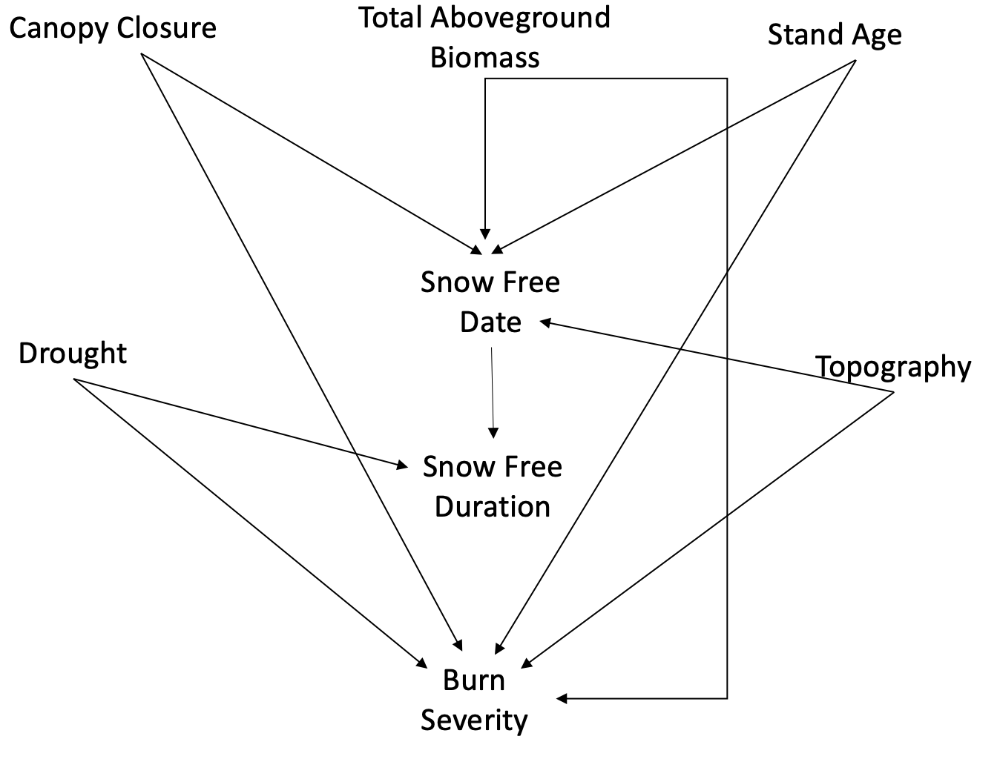

Research
Overview
My research focuses on the cool-temperate ecosystems of the boreal forest of Canada. With climate warming these ecosystems are largely forgotten compared to western North America, and the ways that climate warming shapes natural disturbance dynamics in these ecosystems remain uncertain. I incorporate methods from different fields to answer my research questions, including remote sensing, spatial and temporal modelling, structural equation modelling and machine learning.
My on-going work covers three general themes:
- Climate drivers of wildfire severity
- Insect defoliator and wildfire interactions
- Snow cover dynamics and disturbance severity
Why do we care about wildfire burn severity?
Wildfire severity – changes in vegetation and soil following a wildfire – is an ecosystems response to wildfire that has both ecological and societal impacts. Wildfire severity captures the change in ecosystem structure and function following a wildfire and directly affects ecosystem services such as succession, water quality, timber volume, soil fertility, climate regulation, food and water provision, and biodiversity. Fire and forest managers rely on knowledge about the drivers of wildfire severity to implement management strategies in targeted areas to reduce the costs associated with the loss of ecosystem services. Of particular concern to fire and forest managers are how the spatial and temporal legacies of environmental controls on wildfire will influence wildfire severity and, if so, will severity increase or decrease, and what spatial and temporal patterns in the environment are most important for wildfire severity.
Climate drivers of wildfire severity
Over the last century, wildfires across the boreal forest have become larger and more intense. These trends are expected to continue under future climate projections, with longer fire seasons, more extreme droughts, and more frequent interactions with other disturbances. We know little about how climate change will impact wildfire severity in the eastern boreal forests of North America and what that will mean for resilience.
One of the challenges in forecasting burn severity under climate change is the temporal variabiliity inherent to climate and weather. Yet, how measurements of climate and weather at different time lags will influence models of fire behaviour is unclear. Part of my PhD thesis focuses on the sensitivity of burn severity to moisture availability at different time-lags. Understanding at what time lag wildfire burn severity is most sensitive to changes in moisture availability will help build more accurate projections of wildfire severity under climate change and help managers conserve ecosystem services.
I have shown that burn severity is most sensitive to moisture availability at short (intra-annual, monthly) time-lags in the managed forests of the Ontario boreal shield. At that winter and spring relative humidity is an important indicator for both median and extreme wildfire severity during the fire season.
Snow cover dynamics and wildfire severity
The boreal forest experiences a long snow-covered period and most of the wildfires burn in areas that are snow-covered for most of the year.Earlier snowmelt, decreased snowpack and earlier spring moisture amounts are associated with longer warm season droughts, with implications for the moisture availability, and fire severity in both spring and summer. Since wildfire behaviour is driven by three factors, weather, topography and fuels, changes in snow cover dynamics can have significant consequence on wildfire severity under global change.
Despite the potential importance of changes in snow cover to wildfire severity, the direct and indirect effects of snow cover and forest structural diversity, and the interaction between these two factors on wildfire burn severity remain unclear and to the best of our knowledge have yet to be examined. A central focus of my PhD is how snow cover dynamics influence patterns of burn severity.
As climate warming increases across the globe, and especially at northern latitudes, it is imperative to understand how future changes in snow cover interact with stand-scale forest structure to influence wildfire burn severity. Such information can inform forest management strategies for reducing the impacts of snow cover loss through structural management regimes.
Q1. How does forest structure and snow cove dynamics interact to influence wildfire burn severity in the boreal shield? Q2. do the strength of the direct and indirect relationships differ based on ecoregion and fire seasonality? Q3. Are snow cover dynamics related to within fire variability in burn severity?

Figure 1. Proposed causal relationships between forest structure, snow cover dynamics, topograhy, drought and burn severity
Spruce budworm and wildfire interactions
Defoliation by the eastern spruce budworm is the most widespread disturbance agent in the eastern boreal forest. Spruce budworm (SBW) alter the availability and connectivity of forest fuels at broad spatial and temporal scales. As a consequence, SBW are hypothesized to alter wildfire behaviour, yet evidence is mixed with studies reporting additive, synergistic or antagonistic effects. Most studies quantify SBW effects using univariate approaches, yet SBW defoliation is a multivariate in nature, and different studies have different effects based on the metric used to estimate the effects of defoliation. In my thesis, I develop a multivariate approach to quantify SBW defoliation using structural equation modelling to examine the relationship between SBW and wildfire burn severity. For this work I will be focusing on SBW-fire interaction in the boreal shield ecoregion of Quebec.